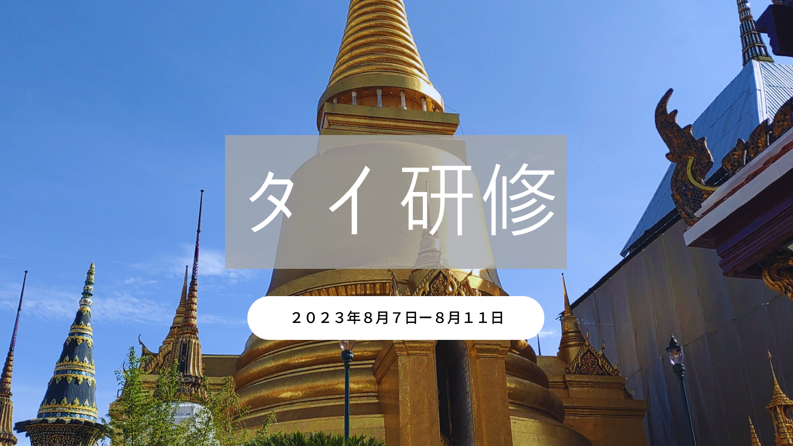

タイ研修報告

概要
講演テーマ：海外研修(タイ)の体験報告~日本を離れて気づいたこと~
場所：オンライン
開催日：2023年10月31日(火)18時~19時
内容
JICA国際協力エッセイコンテスト2020で最優秀賞 (文部科学大臣賞)を受賞、副賞として夏休みの期間を利用して開発途上国における国際協力の現場を視察する海外研修に参加しました。
日本では知ることのできない途上国とそこに住む人々の想いを実感し、国際協力の意義や世界と自分との繋がりについて考える機会になりました。
タイの歴史、タイ文化など日本で生活しているとふれる機会の少ない情報をご提供できたのではないかと思います。